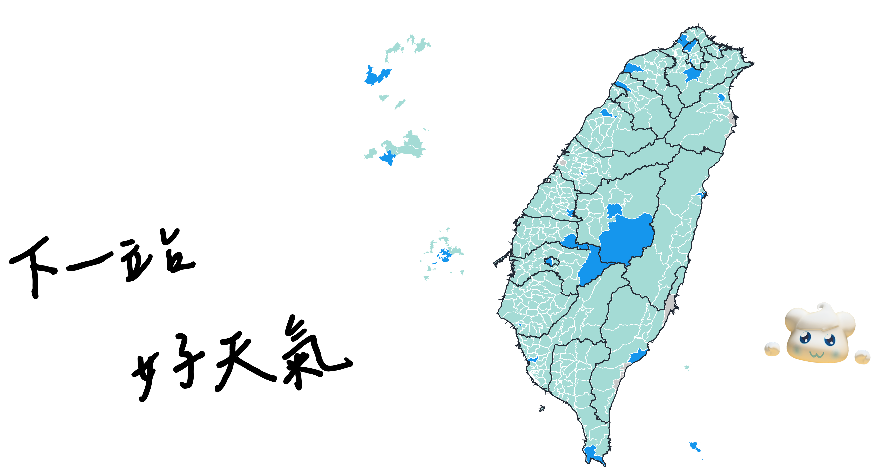

竹子湖氣象站
彭佳嶼氣象站
東吉島氣象站
玉山氣象站
基隆氣象站
蘇澳氣象站
後龍氣象站
澎湖氣象站
恆春氣象站
宜蘭氣象站
花蓮氣象站
金門氣象站
嘉義氣象站
古坑氣象站
臺東氣象站
大武站區
日月潭氣象站
阿里山氣象站
臺東氣象站
臺東氣象站
成功站區
高雄氣象站
臺中氣象站
新竹氣象站
蘭嶼氣象站
新北氣象站
新屋氣象站
臺灣南區
氣象中心
馬祖氣象站
田中氣象站
臺中氣象站
梧棲站區
臺北氣象站
淡水站區
臺北天文站
(臺北站)